Vectors
An airplane is flying at an airspeed of 200 miles per hour headed on a SE bearing of 140°. A north wind (from north to south) is blowing at 16.2 miles per hour, as shown in Figure 1. What are the ground speed and actual bearing of the plane?
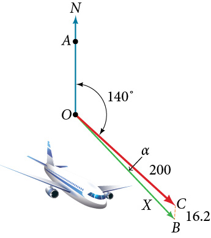
Ground speed refers to the speed of a plane relative to the ground. Airspeed refers to the speed a plane can travel relative to its surrounding air mass. These two quantities are not the same because of the effect of wind. In an earlier section, we used triangles to solve a similar problem involving the movement of boats. Later in this section, we will find the airplane’s groundspeed and bearing, while investigating another approach to problems of this type. First, however, let’s examine the basics of vectors.
A Geometric View of Vectors
A vector is a specific quantity drawn as a line segment with an arrowhead at one end. It has an initial point, where it begins, and a terminal point, where it ends. A vector is defined by its magnitude, or the length of the line, and its direction, indicated by an arrowhead at the terminal point. Thus, a vector is a directed line segment. There are various symbols that distinguish vectors from other quantities:
- Lower case, boldfaced type, with or without an arrow on top such as
- Given initial point and terminal point a vector can be represented as The arrowhead on top is what indicates that it is not just a line, but a directed line segment.
- Given an initial point of and terminal point a vector may be represented as
This last symbol has special significance. It is called the standard position. The position vector has an initial point and a terminal point To change any vector into the position vector, we think about the change in the x-coordinates and the change in the y-coordinates. Thus, if the initial point of a vector is and the terminal point is then the position vector is found by calculating
In Figure 2, we see the original vector and the position vector
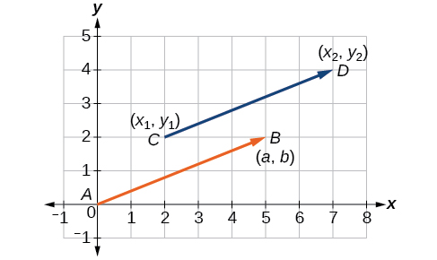
Find the Position Vector
Consider the vector whose initial point is and terminal point is Find the position vector.
Solution
The position vector is found by subtracting one x-coordinate from the other x-coordinate, and one y-coordinate from the other y-coordinate. Thus
The position vector begins at and terminates at The graphs of both vectors are shown in Figure 3.
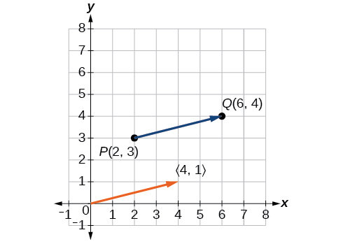
We see that the position vector is
Drawing a Vector with the Given Criteria and Its Equivalent Position Vector
Find the position vector given that vector has an initial point at and a terminal point at then graph both vectors in the same plane.
Solution
The position vector is found using the following calculation:
Thus, the position vector begins at and terminates at See Figure 4.
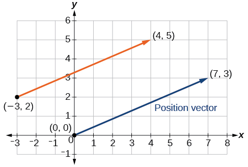
Finding Magnitude and Direction
To work with a vector, we need to be able to find its magnitude and its direction. We find its magnitude using the Pythagorean Theorem or the distance formula, and we find its direction using the inverse tangent function.
Finding the Magnitude and Direction of a Vector
Find the magnitude and direction of the vector with initial point and terminal point Draw the vector.
Solution
First, find the position vector.
We use the Pythagorean Theorem to find the magnitude.
The direction is given as
However, the angle terminates in the fourth quadrant, so we add 360° to obtain a positive angle. Thus, See Figure 6.
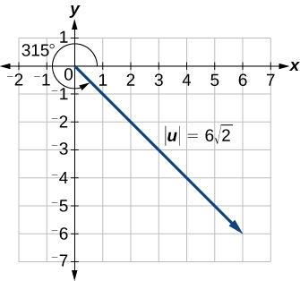
Showing That Two Vectors Are Equal
Show that vector v with initial point at and terminal point at is equal to vector u with initial point at and terminal point at Draw the position vector on the same grid as v and u. Next, find the magnitude and direction of each vector.
Solution
As shown in Figure 7, draw the vector starting at initial and terminal point Draw the vector with initial point and terminal point Find the standard position for each.
Next, find and sketch the position vector for v and u. We have
Since the position vectors are the same, v and u are the same.
An alternative way to check for vector equality is to show that the magnitude and direction are the same for both vectors. To show that the magnitudes are equal, use the Pythagorean Theorem.
As the magnitudes are equal, we now need to verify the direction. Using the tangent function with the position vector gives
However, we can see that the position vector terminates in the second quadrant, so we add Thus, the direction is
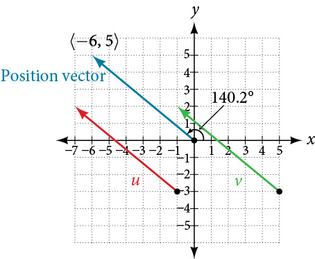
Performing Vector Addition and Scalar Multiplication
Now that we understand the properties of vectors, we can perform operations involving them. While it is convenient to think of the vector as an arrow or directed line segment from the origin to the point vectors can be situated anywhere in the plane. The sum of two vectors u and v, or vector addition, produces a third vector u + v, the resultant vector.
To find u + v, we first draw the vector u, and from the terminal end of u, we drawn the vector v. In other words, we have the initial point of v meet the terminal end of u. This position corresponds to the notion that we move along the first vector and then, from its terminal point, we move along the second vector. The sum u + v is the resultant vector because it results from addition or subtraction of two vectors. The resultant vector travels directly from the beginning of u to the end of v in a straight path, as shown in Figure 8.
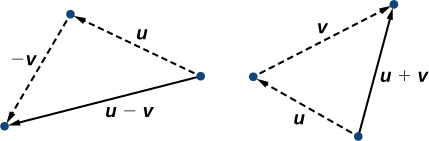
Vector subtraction is similar to vector addition. To find u − v, view it as u + (−v). Adding −v is reversing direction of v and adding it to the end of u. The new vector begins at the start of u and stops at the end point of −v. See Figure 9 for a visual that compares vector addition and vector subtraction using parallelograms.
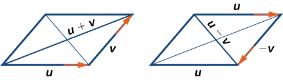
Adding and Subtracting Vectors
Given and find two new vectors u + v, and u − v.
Multiplying By a Scalar
While adding and subtracting vectors gives us a new vector with a different magnitude and direction, the process of multiplying a vector by a scalar, a constant, changes only the magnitude of the vector or the length of the line. Scalar multiplication has no effect on the direction unless the scalar is negative, in which case the direction of the resulting vector is opposite the direction of the original vector.
Performing Scalar Multiplication
Given vector find 3v, and −v.
Solution
Using Vector Addition and Scalar Multiplication to Find a New Vector
Given and find a new vector w = 3u + 2v.
Solution
First, we must multiply each vector by the scalar.
Then, add the two together.
So,
Finding Component Form
In some applications involving vectors, it is helpful for us to be able to break a vector down into its components. Vectors are comprised of two components: the horizontal component is the direction, and the vertical component is the direction. For example, we can see in the graph in Figure 12 that the position vector comes from adding the vectors v1 and v2. We have v1 with initial point and terminal point
We also have v2 with initial point and terminal point
Therefore, the position vector is
Using the Pythagorean Theorem, the magnitude of v1 is 2, and the magnitude of v2 is 3. To find the magnitude of v, use the formula with the position vector.
The magnitude of v is To find the direction, we use the tangent function
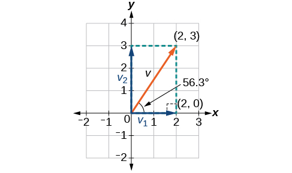
Thus, the magnitude of is and the direction is off the horizontal.
Finding the Components of the Vector
Find the components of the vector with initial point and terminal point
Solution
First find the standard position.
See the illustration in Figure 13.
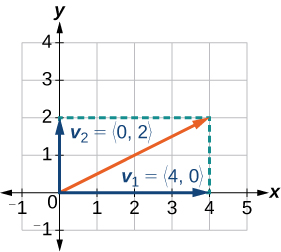
The horizontal component is and the vertical component is
Finding the Unit Vector in the Direction of v
In addition to finding a vector’s components, it is also useful in solving problems to find a vector in the same direction as the given vector, but of magnitude 1. We call a vector with a magnitude of 1 a unit vector. We can then preserve the direction of the original vector while simplifying calculations.
Unit vectors are defined in terms of components. The horizontal unit vector is written as and is directed along the positive horizontal axis. The vertical unit vector is written as and is directed along the positive vertical axis. See Figure 14.
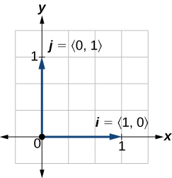
Finding the Unit Vector in the Direction of v
Find a unit vector in the same direction as
Solution
First, we will find the magnitude.
Then we divide each component by which gives a unit vector in the same direction as v:
or, in component form
See Figure 15.
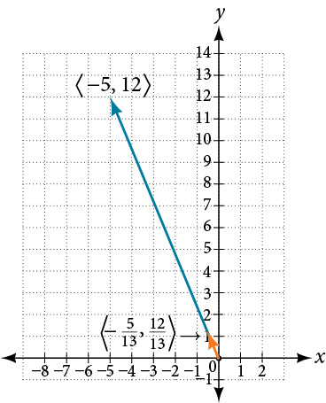
Verify that the magnitude of the unit vector equals 1. The magnitude of is given as
The vector u i j is the unit vector in the same direction as v
Performing Operations with Vectors in Terms of i and j
So far, we have investigated the basics of vectors: magnitude and direction, vector addition and subtraction, scalar multiplication, the components of vectors, and the representation of vectors geometrically. Now that we are familiar with the general strategies used in working with vectors, we will represent vectors in rectangular coordinates in terms of i and j.
Writing a Vector in Terms of i and j
Given a vector with initial point and terminal point write the vector in terms of and
Solution
Begin by writing the general form of the vector. Then replace the coordinates with the given values.
Writing a Vector in Terms of i and j Using Initial and Terminal Points
Given initial point and terminal point write the vector in terms of and
Solution
Begin by writing the general form of the vector. Then replace the coordinates with the given values.
Performing Operations on Vectors in Terms of i and j
When vectors are written in terms of and we can carry out addition, subtraction, and scalar multiplication by performing operations on corresponding components.
Finding the Sum of the Vectors
Find the sum of and
Solution
According to the formula, we have
Calculating the Component Form of a Vector: Direction
We have seen how to draw vectors according to their initial and terminal points and how to find the position vector. We have also examined notation for vectors drawn specifically in the Cartesian coordinate plane using For any of these vectors, we can calculate the magnitude. Now, we want to combine the key points, and look further at the ideas of magnitude and direction.
Calculating direction follows the same straightforward process we used for polar coordinates. We find the direction of the vector by finding the angle to the horizontal. We do this by using the basic trigonometric identities, but with replacing
Writing a Vector in Component Form When It Is Given in Magnitude and Direction Form
Given a vector with length 7 and an angle of 135°, write it in component form.
Solution
Using the conversion formulas and we find that
This vector can be written as or simplified as
Finding the Dot Product of Two Vectors
As we discussed earlier in the section, scalar multiplication involves multiplying a vector by a scalar, and the result is a vector. As we have seen, multiplying a vector by a number is called scalar multiplication. If we multiply a vector by a vector, there are two possibilities: the dot product and the cross product. We will only examine the dot product here; you may encounter the cross product in more advanced mathematics courses.
The dot product of two vectors involves multiplying two vectors together, and the result is a scalar.
Finding the Dot Product of Two Vectors
Find the dot product of and
Solution
Using the formula, we have
Finding the Dot Product of Two Vectors and the Angle between Them
Find the dot product of v1 = 5i + 2j and v2 = 3i + 7j. Then, find the angle between the two vectors.
Solution
Finding the dot product, we multiply corresponding components.
To find the angle between them, we use the formula
See Figure 17.
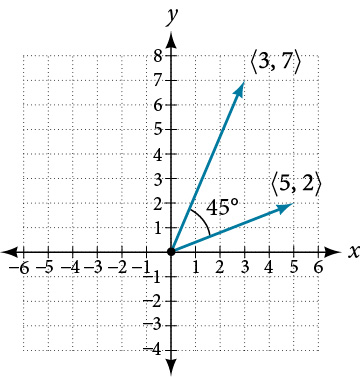
Finding the Angle between Two Vectors
Find the angle between and
Solution
Finding Ground Speed and Bearing Using Vectors
We now have the tools to solve the problem we introduced in the opening of the section.
An airplane is flying at an airspeed of 200 miles per hour headed on a SE bearing of 140°. A north wind (from north to south) is blowing at 16.2 miles per hour. What are the ground speed and actual bearing of the plane? See Figure 19.
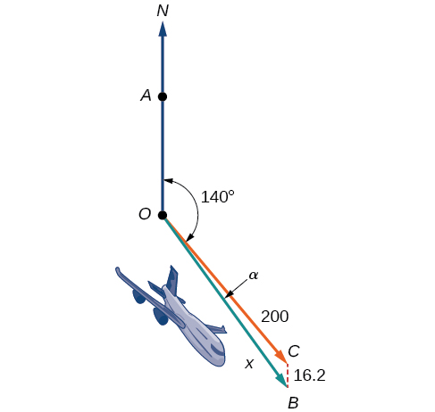
Solution
The ground speed is represented by in the diagram, and we need to find the angle in order to calculate the adjusted bearing, which will be
Notice in Figure 19, that angle must be equal to angle by the rule of alternating interior angles, so angle is 140°. We can find by the Law of Cosines:
The ground speed is approximately 213 miles per hour. Now we can calculate the bearing using the Law of Sines.
Therefore, the plane has a SE bearing of 140°+2.8°=142.8°. The ground speed is 212.7 miles per hour.
Key Concepts
- The position vector has its initial point at the origin. See Example 1.
- If the position vector is the same for two vectors, they are equal. See Example 2.
- Vectors are defined by their magnitude and direction. See Example 3.
- If two vectors have the same magnitude and direction, they are equal. See Example 4.
- Vector addition and subtraction result in a new vector found by adding or subtracting corresponding elements. See Example 5.
- Scalar multiplication is multiplying a vector by a constant. Only the magnitude changes; the direction stays the same. See Example 6 and Example 7.
- Vectors are comprised of two components: the horizontal component along the positive x-axis, and the vertical component along the positive y-axis. See Example 8.
- The unit vector in the same direction of any nonzero vector is found by dividing the vector by its magnitude.
- The magnitude of a vector in the rectangular coordinate system is See Example 9.
- In the rectangular coordinate system, unit vectors may be represented in terms of and where represents the horizontal component and represents the vertical component. Then, v = ai + bj is a scalar multiple of by real numbers See Example 10 and Example 11.
- Adding and subtracting vectors in terms of i and j consists of adding or subtracting corresponding coefficients of i and corresponding coefficients of j. See Example 12.
- A vector v = ai + bj is written in terms of magnitude and direction as See Example 13.
- The dot product of two vectors is the product of the terms plus the product of the terms. See Example 14.
- We can use the dot product to find the angle between two vectors. Example 15 and Example 16.
- Dot products are useful for many types of physics applications. See Example 17.
Section Exercises
Verbal
What are the characteristics of the letters that are commonly used to represent vectors?
Solution
lowercase, bold letter, usually
How is a vector more specific than a line segment?
What are and and what do they represent?
Solution
They are unit vectors. They are used to represent the horizontal and vertical components of a vector. They each have a magnitude of 1.
What is component form?
When a unit vector is expressed as which letter is the coefficient of the and which the
Solution
The first number always represents the coefficient of the and the second represents the
Algebraic
Given a vector with initial point and terminal point find an equivalent vector whose initial point is Write the vector in component form
Given a vector with initial point and terminal point find an equivalent vector whose initial point is Write the vector in component form
Solution
Given a vector with initial point and terminal point find an equivalent vector whose initial point is Write the vector in component form
For the following exercises, determine whether the two vectors and are equal, where has an initial point and a terminal point and has an initial point and a terminal point .
and
Solution
not equal
and
and
Solution
equal
and
and
Solution
equal
Given initial point and terminal point write the vector in terms of and
Given initial point and terminal point write the vector in terms of and
Solution
For the following exercises, use the vectors u = i + 5j, v = −2i− 3j, and w = 4i − j.
Find u + (v − w)
Find 4v + 2u
Solution
For the following exercises, use the given vectors to compute u + v, u − v, and 2u − 3v.
Solution
Let v = −4i + 3j. Find a vector that is half the length and points in the same direction as
Let v = 5i + 2j. Find a vector that is twice the length and points in the opposite direction as
Solution
For the following exercises, find a unit vector in the same direction as the given vector.
a = 3i + 4j
b = −2i + 5j
Solution
c = 10i – j
Solution
u = 100i + 200j
u = −14i + 2j
Solution
For the following exercises, find the magnitude and direction of the vector,
Solution
Solution
Given u = 3i − 4j and v = −2i + 3j, calculate
Given u = −i − j and v = i + 5j, calculate
Solution
Given and calculate
Given u and v calculate
Solution
Graphical
For the following exercises, given draw 3v and
Solution
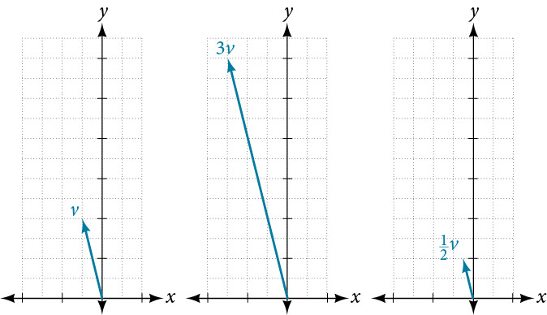
For the following exercises, use the vectors shown to sketch u + v, u − v, and 2u.
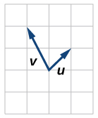
Solution
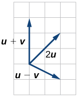
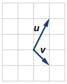
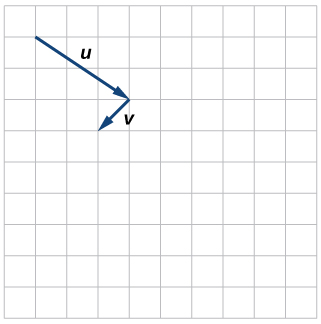
Solution
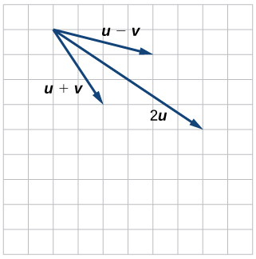
For the following exercises, use the vectors shown to sketch 2u + v.
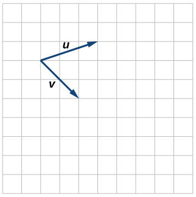
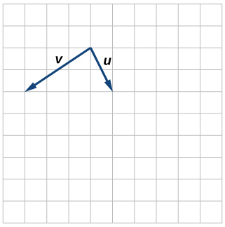
Solution
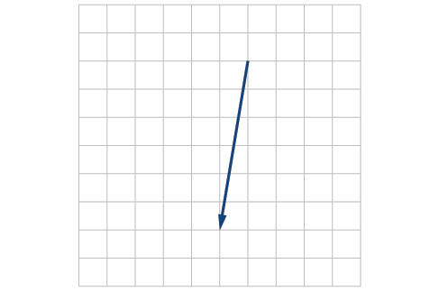
For the following exercises, use the vectors shown to sketch u − 3v.
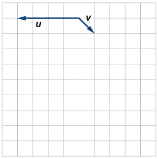
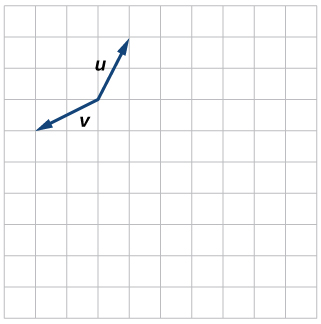
Solution
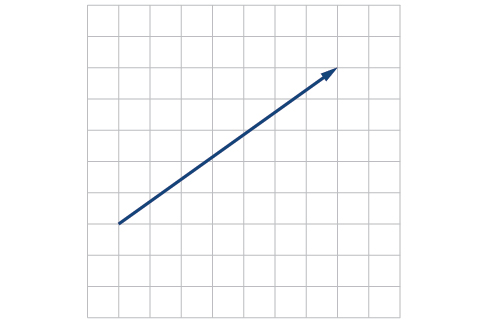
For the following exercises, write the vector shown in component form.
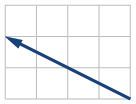
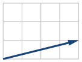
Solution
Given initial point and terminal point write the vector in terms of and then draw the vector on the graph.
Given initial point and terminal point write the vector in terms of and Draw the points and the vector on the graph.
Solution
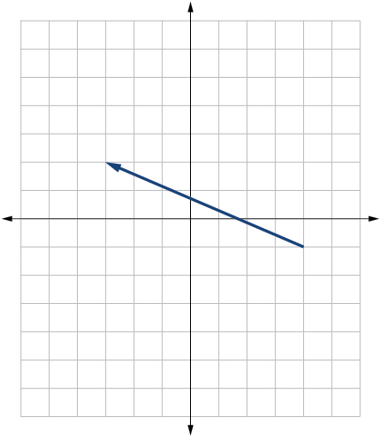
Given initial point and terminal point write the vector in terms of and Draw the points and the vector on the graph.
Extensions
For the following exercises, use the given magnitude and direction in standard position, write the vector in component form.
Solution
Solution
A 60-pound box is resting on a ramp that is inclined 12°. Rounding to the nearest tenth,
- ⓐ Find the magnitude of the normal (perpendicular) component of the force.
- ⓑ Find the magnitude of the component of the force that is parallel to the ramp.
Solution
- ⓐ 58.7
- ⓑ 12.5
A 25-pound box is resting on a ramp that is inclined 8°. Rounding to the nearest tenth,
- ⓐ Find the magnitude of the normal (perpendicular) component of the force.
- ⓑ Find the magnitude of the component of the force that is parallel to the ramp.
Find the magnitude of the horizontal and vertical components of a vector with magnitude 8 pounds pointed in a direction of 27° above the horizontal. Round to the nearest hundredth.
Solution
pounds, pounds
Find the magnitude of the horizontal and vertical components of the vector with magnitude 4 pounds pointed in a direction of 127° above the horizontal. Round to the nearest hundredth.
Find the magnitude of the horizontal and vertical components of a vector with magnitude 5 pounds pointed in a direction of 55° above the horizontal. Round to the nearest hundredth.
Solution
pounds, pounds
Find the magnitude of the horizontal and vertical components of the vector with magnitude 1 pound pointed in a direction of 8° above the horizontal. Round to the nearest hundredth.
Real-World Applications
A woman leaves home and walks 3 miles west, then 2 miles southwest. How far from home is she, and in what direction must she walk to head directly home?
Solution
4.635 miles, 17.764° N of E
A boat leaves the marina and sails 6 miles north, then 2 miles northeast. How far from the marina is the boat, and in what direction must it sail to head directly back to the marina?
A man starts walking from home and walks 4 miles east, 2 miles southeast, 5 miles south, 4 miles southwest, and 2 miles east. How far has he walked? If he walked straight home, how far would he have to walk?
Solution
17 miles. 10.318 miles
A woman starts walking from home and walks 4 miles east, 7 miles southeast, 6 miles south, 5 miles southwest, and 3 miles east. How far has she walked? If she walked straight home, how far would she have to walk?
A man starts walking from home and walks 3 miles at 20° north of west, then 5 miles at 10° west of south, then 4 miles at 15° north of east. If he walked straight home, how far would he have to the walk, and in what direction?
Solution
Distance: 2.868. Direction: 86.474° North of West, or 3.526° West of North
A woman starts walking from home and walks 6 miles at 40° north of east, then 2 miles at 15° east of south, then 5 miles at 30° south of west. If she walked straight home, how far would she have to walk, and in what direction?
An airplane is heading north at an airspeed of 600 km/hr, but there is a wind blowing from the southwest at 80 km/hr. How many degrees off course will the plane end up flying, and what is the plane’s speed relative to the ground?
Solution
4.924°. 659 km/hr
An airplane is heading north at an airspeed of 500 km/hr, but there is a wind blowing from the northwest at 50 km/hr. How many degrees off course will the plane end up flying, and what is the plane’s speed relative to the ground?
An airplane needs to head due north, but there is a wind blowing from the southwest at 60 km/hr. The plane flies with an airspeed of 550 km/hr. To end up flying due north, how many degrees west of north will the pilot need to fly the plane?
Solution
4.424°
An airplane needs to head due north, but there is a wind blowing from the northwest at 80 km/hr. The plane flies with an airspeed of 500 km/hr. To end up flying due north, how many degrees west of north will the pilot need to fly the plane?
As part of a video game, the point is rotated counterclockwise about the origin through an angle of 35°. Find the new coordinates of this point.
Solution
As part of a video game, the point is rotated counterclockwise about the origin through an angle of 40°. Find the new coordinates of this point.
Two children are throwing a ball back and forth straight across the back seat of a car. The ball is being thrown 10 mph relative to the car, and the car is traveling 25 mph down the road. If one child doesn't catch the ball, and it flies out the window, in what direction does the ball fly (ignoring wind resistance)?
Solution
21.801°, relative to the car’s forward direction
Two children are throwing a ball back and forth straight across the back seat of a car. The ball is being thrown 8 mph relative to the car, and the car is traveling 45 mph down the road. If one child doesn't catch the ball, and it flies out the window, in what direction does the ball fly (ignoring wind resistance)?
A 50-pound object rests on a ramp that is inclined 19°. Find the magnitude of the components of the force parallel to and perpendicular to (normal) the ramp to the nearest tenth of a pound.
Solution
parallel: 16.28, perpendicular: 47.28 pounds
Suppose a body has a force of 10 pounds acting on it to the right, 25 pounds acting on it upward, and 5 pounds acting on it 45° from the horizontal. What single force is the resultant force acting on the body?
Suppose a body has a force of 10 pounds acting on it to the right, 25 pounds acting on it ─135° from the horizontal, and 5 pounds acting on it directed 150° from the horizontal. What single force is the resultant force acting on the body?
Solution
19.35 pounds, 231.54° from the horizontal
The condition of equilibrium is when the sum of the forces acting on a body is the zero vector. Suppose a body has a force of 2 pounds acting on it to the right, 5 pounds acting on it upward, and 3 pounds acting on it 45° from the horizontal. What single force is needed to produce a state of equilibrium on the body?
Suppose a body has a force of 3 pounds acting on it to the left, 4 pounds acting on it upward, and 2 pounds acting on it 30° from the horizontal. What single force is needed to produce a state of equilibrium on the body? Draw the vector.
Solution
5.1583 pounds, 75.8° from the horizontal
Chapter Review Exercises
Non-right Triangles: Law of Sines
For the following exercises, assume is opposite side is opposite side and is opposite side Solve each triangle, if possible. Round each answer to the nearest tenth.
Solution
Not possible
Solve the triangle.
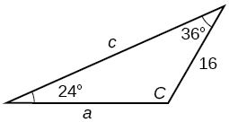
Solution
Find the area of the triangle.
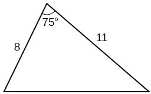
A pilot is flying over a straight highway. He determines the angles of depression to two mileposts, 2.1 km apart, to be 25° and 49°, as shown in Figure 20. Find the distance of the plane from point and the elevation of the plane.
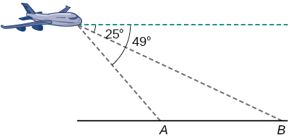
Solution
distance of the plane from point 2.2 km, elevation of the plane: 1.6 km
Non-right Triangles: Law of Cosines
Solve the triangle, rounding to the nearest tenth, assuming is opposite side is opposite side and is opposite side
Solve the triangle in Figure 21, rounding to the nearest tenth.
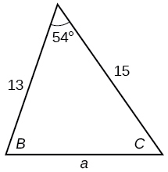
Solution
Find the area of a triangle with sides of length 8.3, 6.6, and 9.1.
To find the distance between two cities, a satellite calculates the distances and angle shown in Figure 22 (not to scale). Find the distance between the cities. Round answers to the nearest tenth.
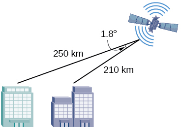
Solution
40.6 km
Polar Coordinates
Plot the point with polar coordinates
Plot the point with polar coordinates
Solution
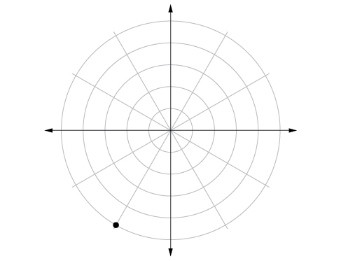
Convert to rectangular coordinates.
Convert to rectangular coordinates.
Solution
Convert to polar coordinates.
Convert to polar coordinates.
Solution
For the following exercises, convert the given Cartesian equation to a polar equation.
Solution
For the following exercises, convert the given polar equation to a Cartesian equation.
Solution
For the following exercises, convert to rectangular form and graph.
Solution
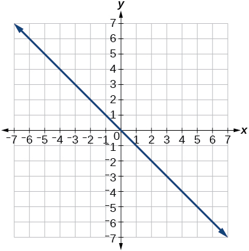
Polar Coordinates: Graphs
For the following exercises, test each equation for symmetry.
Solution
symmetric with respect to the line
Sketch a graph of the polar equation Label the axis intercepts.
Solution
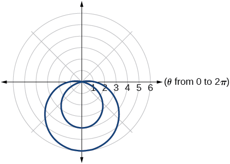
Sketch a graph of the polar equation
Sketch a graph of the polar equation
Solution
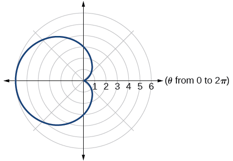
Polar Form of Complex Numbers
For the following exercises, find the absolute value of each complex number.
Solution
5
Write the complex number in polar form.
Solution
For the following exercises, convert the complex number from polar to rectangular form.
Solution
For the following exercises, find the product in polar form.
Solution
For the following exercises, find the quotient in polar form.
Solution
For the following exercises, find the powers of each complex number in polar form.
Find when
Find when
Solution
For the following exercises, evaluate each root.
Evaluate the cube root of when
Evaluate the square root of when
Solution
For the following exercises, plot the complex number in the complex plane.
Solution
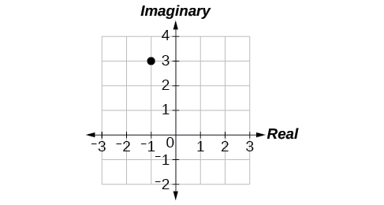
Parametric Equations
For the following exercises, eliminate the parameter to rewrite the parametric equation as a Cartesian equation.
Solution
Parameterize (write a parametric equation for) each Cartesian equation by using and for
Parameterize the line from to so that the line is at at and at
Solution
Parametric Equations: Graphs
For the following exercises, make a table of values for each set of parametric equations, graph the equations, and include an orientation; then write the Cartesian equation.
Solution
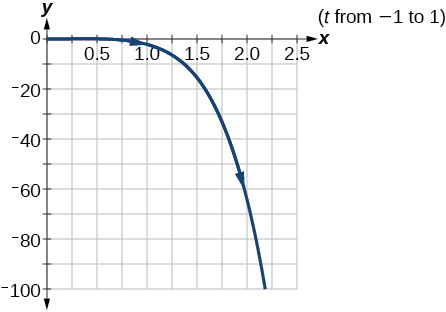
A ball is launched with an initial velocity of 80 feet per second at an angle of 40° to the horizontal. The ball is released at a height of 4 feet above the ground.
- ⓐ Find the parametric equations to model the path of the ball.
- ⓑ Where is the ball after 3 seconds?
- ⓒ How long is the ball in the air?
Solution
- The ball is 14 feet high and 184 feet from where it was launched.
- 3.3 seconds
Vectors
For the following exercises, determine whether the two vectors, and are equal, where has an initial point and a terminal point and has an initial point and a terminal point
and
and
Solution
not equal
For the following exercises, use the vectors and to evaluate the expression.
u − v
2v − u + w
Solution
4i
For the following exercises, find a unit vector in the same direction as the given vector.
a = 8i − 6j
b = −3i − j
Solution
i j
For the following exercises, find the magnitude and direction of the vector.
Solution
Magnitude: Direction:
For the following exercises, calculate
u = −2i + j and v = 3i + 7j
u = i + 4j and v = 4i + 3j
Solution
Given v draw v, 2v, and v.
Given the vectors shown in Figure 23, sketch u + v, u − v and 3v.
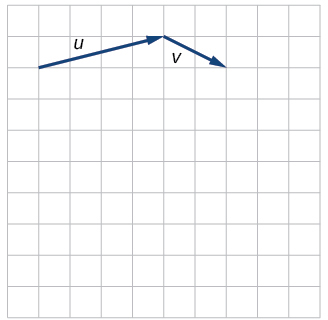
Solution
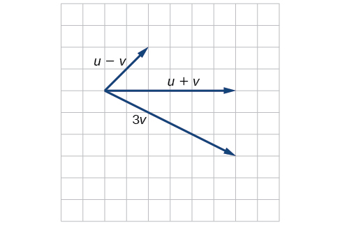
Given initial point and terminal point write the vector in terms of and Draw the points and the vector on the graph.
Practice Test
Assume is opposite side is opposite side and is opposite side Solve the triangle, if possible, and round each answer to the nearest tenth, given
Solution
Find the area of the triangle in Figure 24. Round each answer to the nearest tenth.
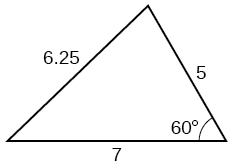
A pilot flies in a straight path for 2 hours. He then makes a course correction, heading 15° to the right of his original course, and flies 1 hour in the new direction. If he maintains a constant speed of 575 miles per hour, how far is he from his starting position?
Solution
Convert to polar coordinates, and then plot the point.
Convert to rectangular coordinates.
Solution
Convert the polar equation to a Cartesian equation:
Convert to rectangular form and graph:
Solution
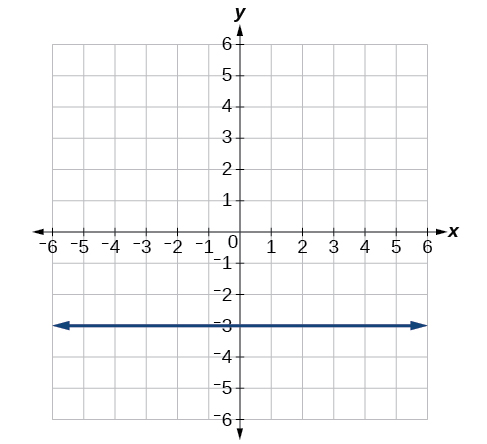
Test the equation for symmetry:
Graph
Solution
Graph
Find the absolute value of the complex number
Solution
Write the complex number in polar form:
Convert the complex number from polar to rectangular form:
Solution
Given and evaluate each expression.
Solution
Solution
Plot the complex number in the complex plane.
Eliminate the parameter to rewrite the following parametric equations as a Cartesian equation:
Solution
Parameterize (write a parametric equation for) the following Cartesian equation by using and
Graph the set of parametric equations and find the Cartesian equation:
Solution
A ball is launched with an initial velocity of 95 feet per second at an angle of 52° to the horizontal. The ball is released at a height of 3.5 feet above the ground.
- ⓐFind the parametric equations to model the path of the ball.
- ⓑWhere is the ball after 2 seconds?
- ⓒHow long is the ball in the air?
For the following exercises, use the vectors u = i − 3j and v = 2i + 3j.
Find 2u − 3v.
Solution
−4i − 15j
Calculate
Find a unit vector in the same direction as
Solution
Given vector has an initial point and terminal point write the vector in terms of and On the graph, draw and
Analysis
Notice that the vector 3v is three times the length of v, is half the length of v, and –v is the same length of v, but in the opposite direction.